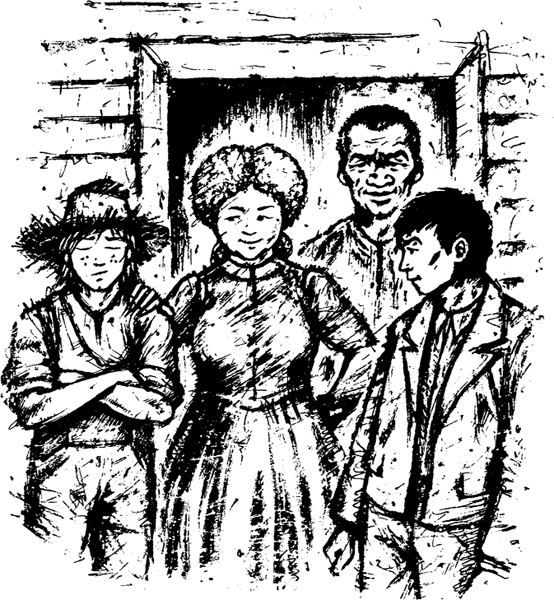

10

Tom Sawyer
‘Jim có ở trong túp lều kia không nhỉ?’ tôi thắc mắc.
Tôi bước tới túp lều và khẽ gọi qua cánh cửa.
‘Jim? Cậu có ở đó không?’ tôi hỏi.
‘Huck!’ tiếng Jim vọng ra từ bên trong túp lều. ‘Phải Huck không?’
‘Đừng lo, Jim,’ tôi nói. ‘Tớ sẽ đưa cậu ra khỏi đây sớm thôi.’
Tôi nói vậy. Tôi muốn Jim được vui. Nhưng tôi không có kế hoạch gì cả. Tôi định làm gì đây?
Ngay lúc đó, cánh cửa ngôi nhà nông thôn bật mở. Một người phụ nữ lớn tuổi xinh đẹp đứng ở ngưỡng cửa.
‘Tom!’ bà ấy nói. ‘Cậu là Tom Sawyer đến từ St Petersburg phải không! Tôi đã chờ cậu đấy. Tôi là Sally Phelps, em họ với dì Polly của cậu. Polly đã kể cho tôi về chuyến ghé thăm của cậu. Tôi chưa từng được gặp cậu nhưng dì của cậu đã kể cho tôi nghe mọi thứ về cậu. Cuối cùng cậu cũng đến rồi, cậu bé ạ. Thật tuyệt! Tôi rất mừng! Cậu phải gọi tôi là “dì Sally” nhé. Chồng tôi không có nhà lúc này. Nhưng lát nữa ông ấy sẽ về. Và ông ấy cũng sẽ mừng lắm!’
Thật may mắn! Tôi mỉm cười với người phụ nữ lớn tuổi kia.
‘Tớ sẽ là Tom Sawyer vài ngày,’ tôi tự nhủ. ‘Tớ biết về gia đình Tom. Tớ có thể trả lời các câu hỏi về họ. Tớ sẽ ở đây vài ngày.’
Tôi muốn được ở lại trang trại. Tôi muốn giúp Jim. Tôi phải nghĩ ra kế hoạch đã. Tôi bắt đầu lên tiếng.
‘Vâng ạ,’ tôi nói. ‘Tớ là Tom.’
Nhưng ngay lúc đó, tôi đã nghe thấy một giọng nói đằng sau mình.
‘Huck! Cậu làm gì ở đây vậy?’ một giọng nói của một cậu bé hét lên. Tôi nhận ra giọng nói đó. Là Tom Sawyer!
Tôi kể cho Tom về cuộc phiêu lưu trên sông Mississippi của tôi. Tom và dì Sally của cậu ấy đã lắng nghe câu chuyện của tôi và cười phá lên.
Rồi Tom kể cho chúng tôi vài tin vui.
‘Cậu rời St Petersburg cùng Jim,’ Tom nói. ‘Nhưng sau đó không lâu thì bà Watson mất. Bà ấy đã định bán Jim nhưng rất hối hận về điều đó. Bà ấy không phải là người xấu. Trước khi mất, bà ấy đã giải phóng Jim. Jim không phải là nô lệ nữa rồi!’
Chúng tôi sớm đưa Jim ra khỏi túp lều gỗ. Dì Sally đưa anh ấy chút thức ăn.
‘Bây giờ cậu dự định làm gì, Huck?’ Tom hỏi.
‘Tớ không muốn quay về St Petersburg,’ tôi nói. ‘Tớ sợ cha mình. Một ngày nào đó ông ấy sẽ giết chết tớ.’
‘Huck ạ,’ Jim buồn bã nói. ‘Tôi phải nói cho cậu một điều. Cậu còn nhớ căn nhà nổi trên sông không? Chúng ta thấy nó gần Đảo Jackson. Bên trong có một người đàn ông đã chết. Có người đã bắn chết ông ấy. Tôi đã không cho cậu nhìn thấy người đàn ông chết đó. Đó là cha của cậu, Huck. Lúc đó tôi không nói cho cậu biết. Tôi không muốn cậu buồn.’
‘Cậu là người tốt, Jim ạ,’ tôi khẽ nói. ‘Nhưng tớ không buồn.’
Rồi dì Sally lên tiếng.
‘Bây giờ cậu phải ở lại với chúng tôi, Huck,’ bà ấy nói. ‘Cậu sẽ được mặc quần áo sạch. Cậu sẽ được rửa mặt hằng ngày. Cậu sẽ được ngủ trên chiếc giường êm ái mỗi đêm. Cậu sẽ hạnh phúc khi ở đây!’
Những chuyện đó xảy ra vào ngày hôm qua. Sáng mai, tôi sẽ lại bắt đầu lên đường!

Mục lục
- Tiêu đề
- Nội dung
- Ghi chú về tác giả
- Ghi chú về câu chuyện này
- Nhân vật trong câu chuyện này
- 1. Nhà văn không biết mọi thứ!
- 2. Ngôi nhà gỗ trong rừng
- 3. Hai đứa chạy trốn
- 4. Trên bè
- 5. Quyết định
- 6. Quốc vương và công tước
- 7. Những kẻ lừa đảo tinh vi
- 8. Cỗ quan tài
- 9. Anh em cùng cha khác mẹ!
- 10. Tom Sawyer
- Bản quyền